Bunbun  Bunbun Riding in the Truck I take Bunbun everywhere I go so he rides in the car alot. He loves to get under the pedals but I won't let him so he settles for being in the middle.  When Bun wants you to pet him he holds his head down in front of you unlit you pet him. And if you don't pet him he will scratch you (not a mean scratch more of a trying to dig scratch) until you do pet him.p.  This is a cage I built for Bunbun because I thought he deserved a Bigger cage than those manufactured for the average rabbit. It is big enough to walk into but it doesn't have a top.  The Bun Trying to Eat Carpet  Bunbun in a Motel Room These pictures were taken in a motel in Nevada. I had no place to hang his water bottle so thats why he's drinking out of a cup. 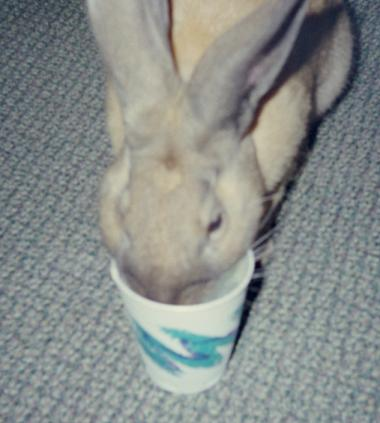 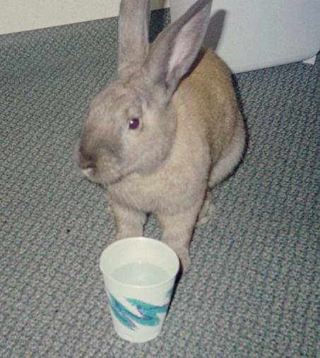 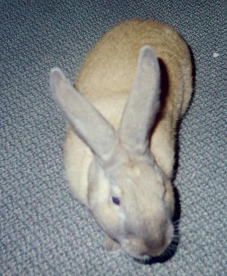 Bunbun In the RV For those of you who don't know Bun I will tell you some things about him. While I was in Nevada with my mom and Jerry our truck died on a road surrounded by desert and Jerry said that he found a rabbit that you could walk right up to. So I went to go see if it was still there and it was. You could stand about three feet away from it and it would just sit there calmly eating. I tried to walk closer and it just hopped slowly away. It would let Jerry get closer so he caught it for me and it didn'teven squirm when I held it. So I took it to the truck and we were able to get the truck to a motel where we stayed while we tried to fix the truck. That night the bunny started sneezing up blood and we couldn't figure out why so we called the vet who told us that resperatory problems are common in rabbits. He stopped sneezing and seemed fine until a week or so later he developed a big lump on his head. We took him to the vet after I saw what looked like some sort of alein worm face in a hole in the lump. The vet pulled two huge maggots out of his face one in the lump and one in a smaller lump beside his nose. The one by his nose was causing him to sneeze blood. We were told that the maggots were most common in cattle and that eggs are layed by the flys in whatever animal and the eggs hatch and the maggots eat the animal from the inside out. Now that he was healthy it was time to find a name for him. I went to web sites for baby names and web sites for pet names but nothing seemed to fit him. So I took my nameless bunny werever I went and everyone started calling him bun bun or bunny and I started to call him Bunbun and thus his name was born. Bunbun is now seven months old and comes when you call his name. 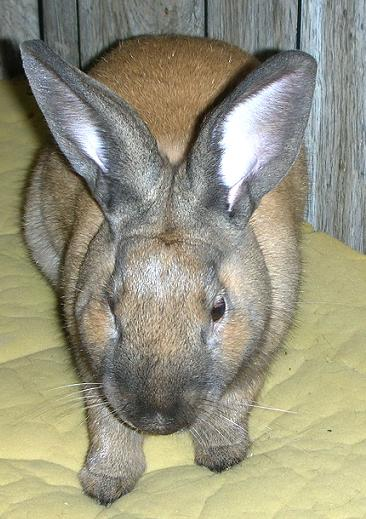 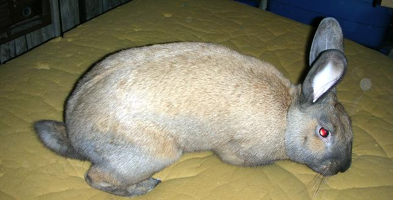 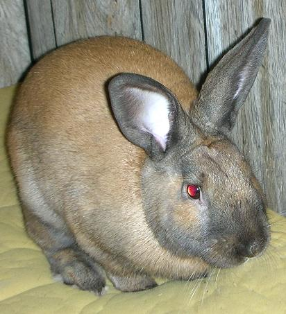 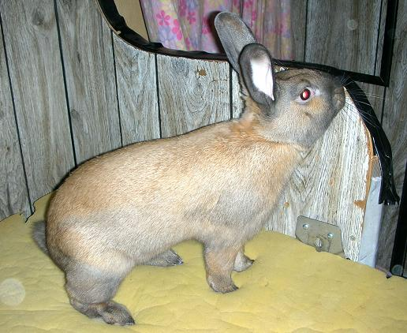 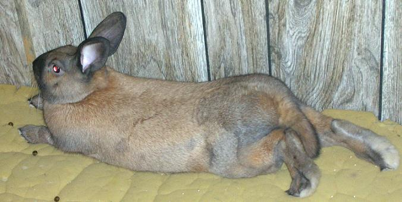 More Pictures 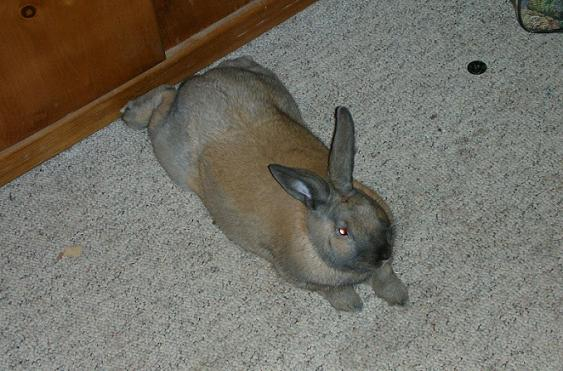 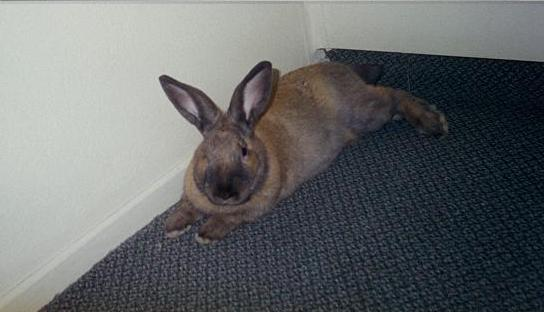 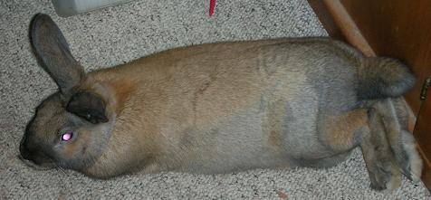 |